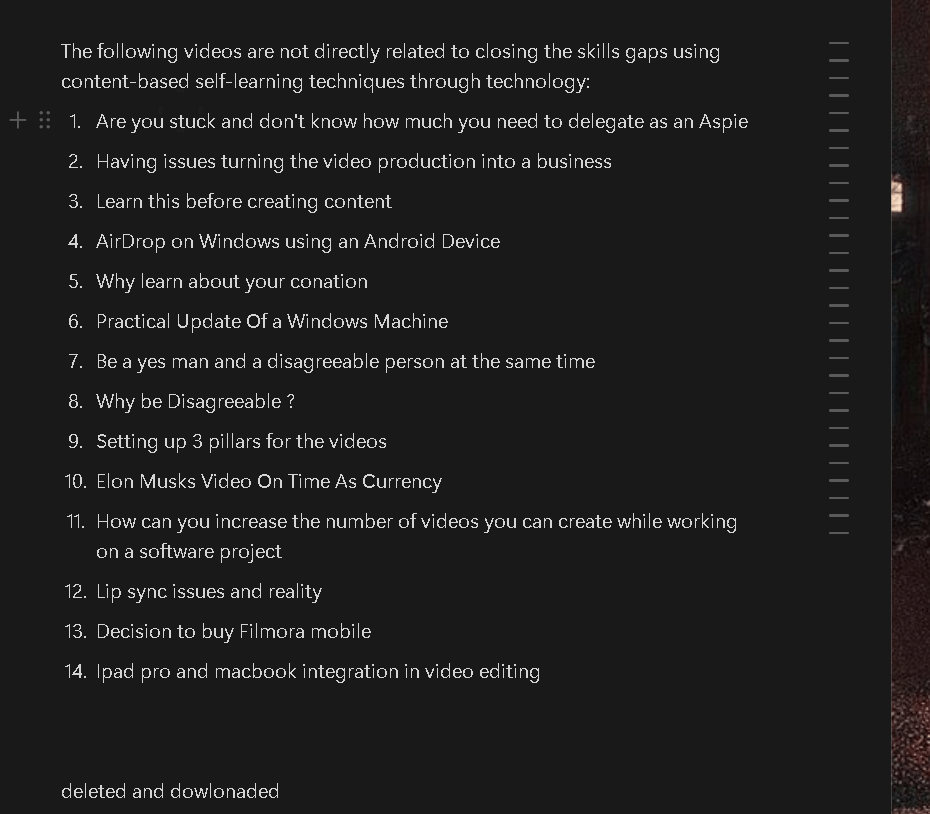
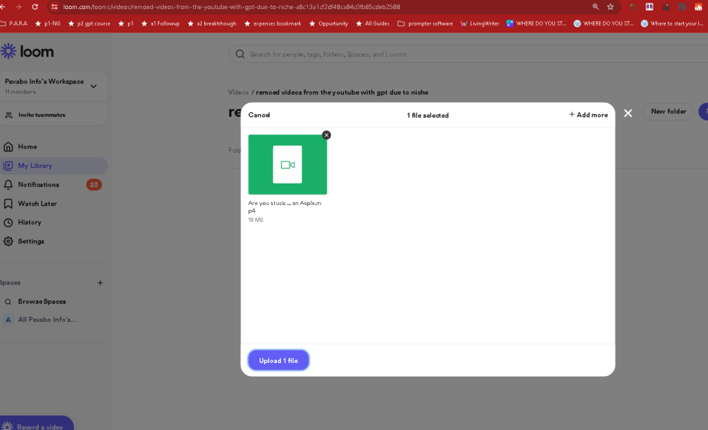
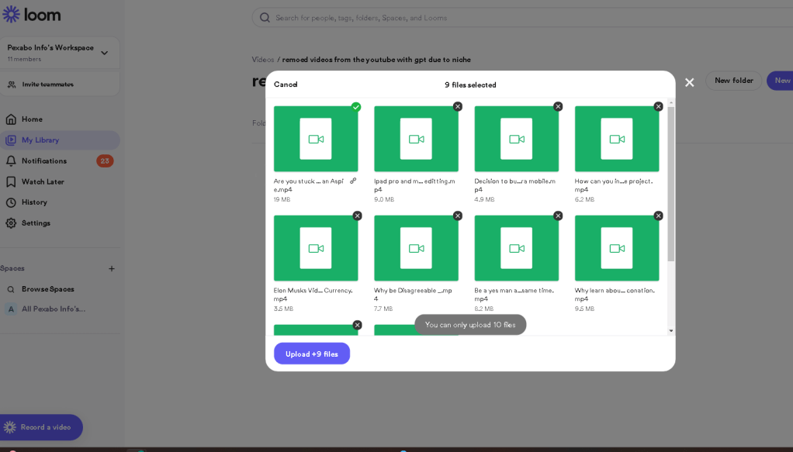
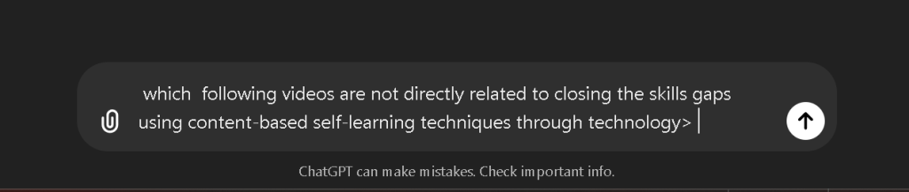
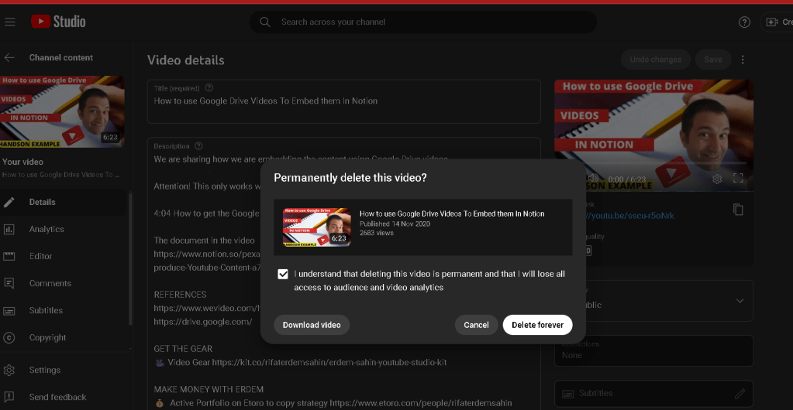
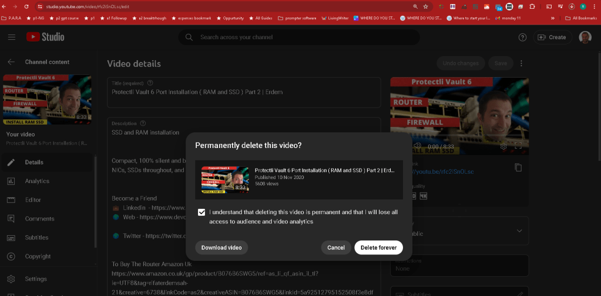

execute with gpt on niche identify
output > The following videos are not directly related to closing the skills gaps using content-based self-learning techniques through technology:
ask the prompt

Loom folder > https://www.loom.com/looms/videos/remoed-videos-from-the-youtube-with-gpt-due-to-niche-a8c13a1cf2df48ca84c0fb85cdeb2588

video production into a business
backing up >>>> i got to trust the tech ]


The following videos are not directly related to closing the skills gaps using content-based self-learning techniques through technology:
-
Why IT contractors get paid more than permanent employees?
-
Which Contractor Makes More Money
-
Get Started with IT Contracting (Software Career)
-
How to Stream Two Sources To YouTube At The Same Time
-
How to use a cover letter page for the agencies as a software contractor
-
Difference between ripple and rolling edit in Adobe Premiere
-
Wireshark Usage
-
Top 5 DevOps Questions
-
Network Overlap Error
-
Do not be afraid to delete cloud resources!
-
Should we use Whatsapp as a content creator?
-
Working As a Contractor!
-
Microsoft Enterprise Agreement
-
What you should focus on when you release a pipeline
-
VPN bonding versus MPTCP Solution Comparison (how can you increase internet speed)
-
How to use Google Drive Videos To Embed them In Notion
-
Protectli Vault installation Clip
-
Protectli Vault 6 Port Installation (RAM and SSD) Part 2 | Erdem
-
Protectli Vault 6 Port I5 Router Unboxing (Part 1)
-
Fedora 33 Versus Ubuntu 20 Compare
-
Fedora 33 Screen Freeze Issue (EGpu)
-
Exploring the Concept of Infinite Games with Eric Wroolie
-
How to Set Up Unlimited Internet with Double Speed Every Year!
The remaining videos:
-
How to make money online more than nerds without a college degree
-
How to use social media to leverage your CV
-
How to use Kanban boards in Notion to visualize progress? (enquiry)
These are more likely to be related to content-based self-learning techniques and leveraging technology to close skills gaps.
relatively best performers are also deleted as well
even the top ones

PArt your ways

I would post them in blog with gpt and loom maybe that is usefull fopr the people who find them on web and come to the linkedin and other social platforms
Based on the titles and descriptions provided, the following videos are not directly related to closing the skills gaps using multimedia content-based self-learning strategy through technology:
-
Setting up 3 pillars for the videos - Focuses on content creation strategy for a YouTube channel.
-
lip sync issues and reality - Appears to be about technical issues with lip sync.
-
Sqlpackage and azure devops attaching collections - Discusses specific technical issues with SQL and Azure DevOps.
-
Create a better time management system than Ali - Related to time management.
-
Problem Solution Fit - Title and description unclear, likely not about self-learning strategies.
-
End of the Excuses - Motivational content for creating YouTube Shorts.
-
Show tell do apply - Description not provided, but seems to be more about a general approach.
-
Use correct use cases - Description not provided, focus unclear.
-
The Importance of Rest Insights from a Global DevOps Contractor - Discusses rest and well-being rather than skills gaps.
-
Tips for Downloading and Uploading Large Files with Azure Storage Explorer - Focuses on technical tips for Azure.
-
What should you watch today? - Promotes courses and content, not specifically about skills gaps.
-
Who is Erdem? - Personal introduction, not related to self-learning strategy.
-
Become a contractor pros and cons - Discusses pros and cons of contracting.
-
Getting fired is the best thing - Motivational content, not about self-learning.
-
Course Format "Infrastructure as Code" - Course promotion.
-
Welcome to the Course_"Infrastructure as Code" - Course promotion.
-
Welcome to the Course "Infrastructure as Code" - Course promotion.
-
Course Format of "Infrastructure as Code" - Course promotion.
-
MOTIVATE YOURSELF EVERYDAY! Being a Youtuber - Motivational content.
-
Planning your day with Notion and Lucid Charts - Productivity tools.
-
Why consider living in Cayman Islands as a British Person - Lifestyle advice.
-
Why do you need a business model? - Business strategy.
-
Step by step tutorial for beginners on Building Docker file _ Part 4 - Technical tutorial.
-
Setup Nvidia Cuda Core Runner Basic Issues - Technical tutorial.
-
Line Producer Job Ad - Job advertisement.
-
GPU Based Docker Containers With Python_Part 2 - Technical tutorial.
-
Financial Advice For an Indie Game Developer who wants work on Virtual Reality for Metaverse - Financial advice.
-
Gpu Based Docker Containers With Python_Part-1 - Technical tutorial.
-
Why Create Videos For Personal Development - Content creation advice.
-
THE KEY TO EARNING MUCH MORE MONEY Being Contractor! - Financial advice.
-
How to survive a Travis Scott concert? (Astroworld Tragedy) - Safety advice.
-
How to use Azure Support ? ( Secret Power ) - Technical support advice.
-
How to start using Azure Bicep without falling into traps? - Technical advice.
-
Why Use Azure Bicep To Deploy Cloud Resources ? - Technical advice.
-
Which IT Contracts Should You Focus ? ( UpWork CrossOver And Direct Linkedin Comparison ) - Career advice.
-
I'm AFRAID of Cloud Services! - Personal experience with cloud services.
-
Unknown Secret of Ali Abdaal's Side Hustle course - Course review.
-
How to make money online more than nerds without a college degree - Financial advice.
Imported from rifaterdemsahin.com · 2024